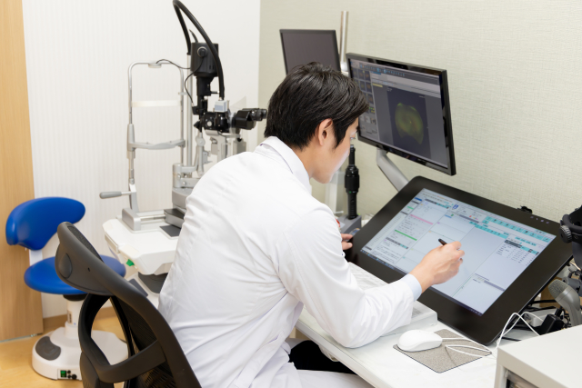
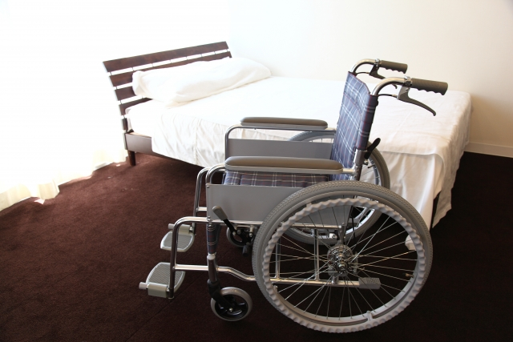

CONCEPT 当院について
GREETING 院長あいさつ
地域の皆様に寄り添い、安心していただける医療を目指して
皆様、こんにちは。Miraiクリニック院長の○○太郎です。
当院は、患者様お一人おひとりの不安や悩みに丁寧に向き合い、わかりやすい説明と温かみのある診療を心がけております。
「ちょっと体調が気になるな」という時に、いつでも気軽に相談できる地域のホームドクターとして、皆様の健康な毎日をサポートしてまいります。
Miraiクリニック 院長 ○○ 太郎
FEATURES 当院の3つの特徴

丁寧な問診とわかりやすい説明
専門用語をできるだけ使わず、図や写真を用いて納得いただけるまで丁寧にご説明いたします。

安心・安全を考慮した最新設備
精密な診断を可能にする医療機器と、徹底した衛生管理のもとで安全な医療を提供します。

通いやすいバリアフリー環境
車椅子やベビーカーをご利用の方も安心のフルバリアフリー構造。キッズスペースも完備しています。
ABOUT クリニック概要・沿革
【 クリニック概要 】
- 医院名
- 医療法人社団 Miraiクリニック
- 院長
- 山田 太郎
- 所在地
- 〒100-0001 東京都千代田区千代田 1-1-1
- 診療科目
- 内科 / 小児科 / アレルギー科
【 沿革 】
- 2015年 4月
- 東京都千代田区にて「山田内科クリニック」を開院
- 2018年 10月
- 受診患者数の増加に伴い、現在の場所へ移転・拡大
- 2021年 6月
- 医療法人社団 Miraiクリニック 設立
STAFF 医師・スタッフ紹介
院長
山田 太郎 ヤマダ タロウ
【 略歴 】
- 2010年
- ○○医科大学 医学部 卒業
- 2012年
- ○○総合病院 内科勤務
- 2020年
- Miraiクリニック 開院